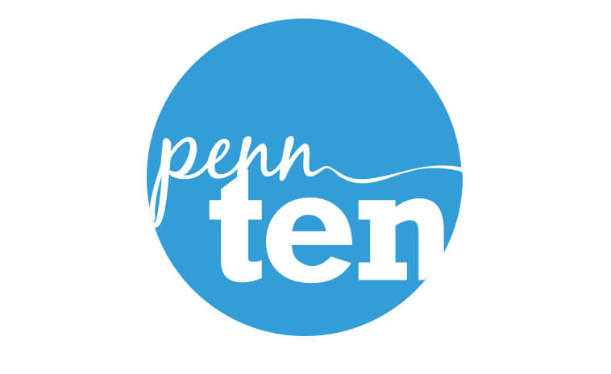

The Outcome
Logo
Social Media Graphics
To optimize Facebook sharing, I made sure the following graphics appeared as thumbnails on Facebook by using Open Graph tags (property="og:image" ). The graphics featured photos that best demonstrated the candidates and quotes with the ubiquitous blue circle element to grab people's’ attention and denote that these stories were part of the Penn Ten series.

Microsite
I ended up building each individual candidate page in Adobe Muse. I added parallax animation and full-width media to create movement and dynamism.
The current Penn Ten site is still up but some bugs have developed since then with a few pages redirecting inappropriately. If interested in viewing each page, here are the specific names you can view:
• Ariel Koren
• Taylor McLendon aka Ivy Sole
• Seaon Shin
• Christopher Yao
• Denzel Cummings
• Daniel Fine
• Allyson Ahlstrom
• Sayid Abdullaev
• Shadrack Frimpong
• Adrian Lievano